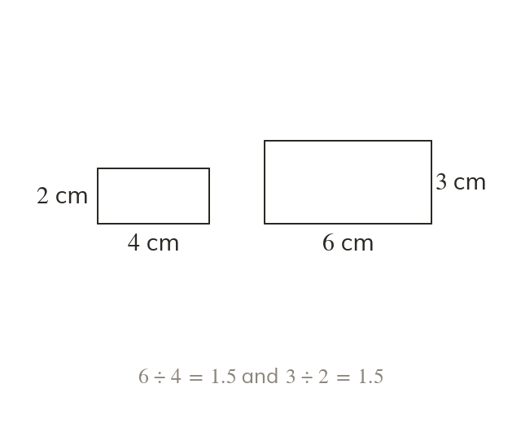

One factor for every length
Similar shapes multiply every length by the same scale factor. It is a length divided by its matching length.
Similar shapes have every length multiplied by the same scale factor. The factor is one length divided by its matching length.